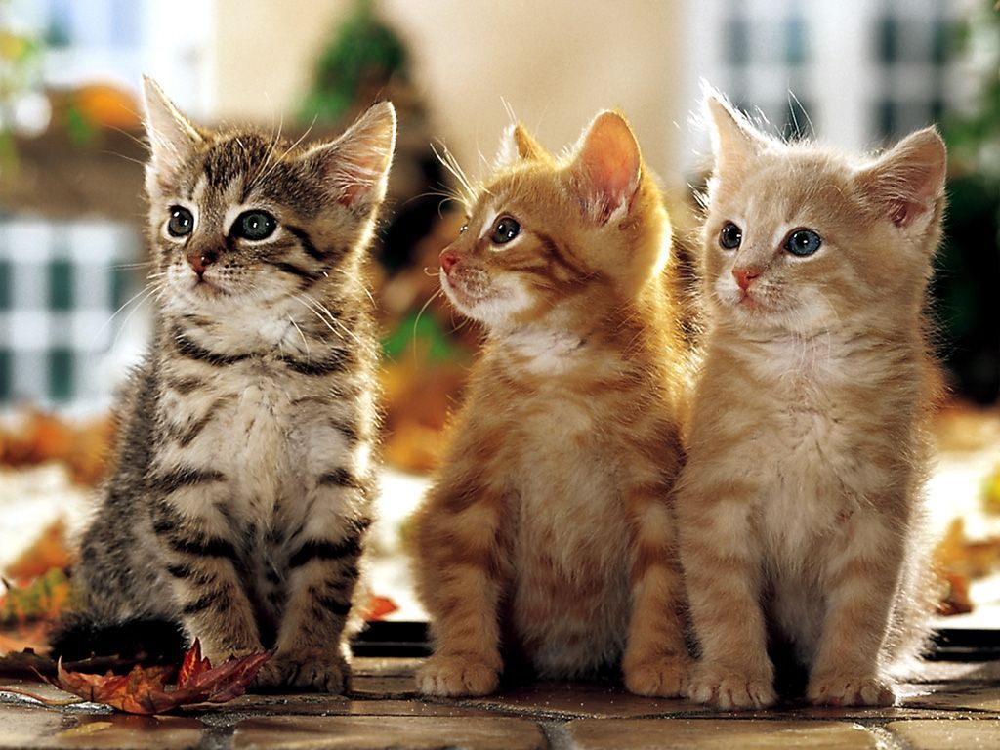

Tout sur les Chatons
Les chatons, avec leurs yeux curieux et leurs mouvements maladroits, ont un charme irrésistible. Dès les premières semaines de leur vie, les chatons explorent le monde avec enthousiasme et énergie. Ils apprennent rapidement à interagir avec leur environnement, y compris avec les humains et les autres animaux.
Les chatons sont connus pour leur comportement joueur. Ils aiment chasser des objets, ce qui est un comportement instinctif qui les prépare à la chasse dans la nature. Jouer avec votre chaton n'est pas seulement amusant, mais aussi essentiel pour son développement physique et mental.
L'éducation des chatons commence dès leur plus jeune âge. Il est important de leur apprendre les bonnes manières, comme l'utilisation de la litière et le fait de ne pas griffer les meubles. Avec de la patience et de la constance, les chatons peuvent apprendre ces comportements essentiels pour une cohabitation harmonieuse.
En somme, les chatons ne sont pas seulement adorables; ils sont aussi des compagnons intelligents et affectueux qui peuvent apporter beaucoup de joie dans nos vies.